X


Use this link to get 80%% off the Automate the Boring Stuff online video course.
Support me on Patreon
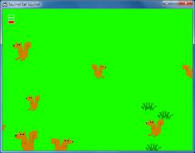 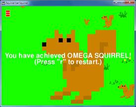
Squirrel Eat Squirrel is loosely based on the game “Katamari Damacy”. The player controls a small squirrel that must hop around the screen eating smaller squirrels and avoiding larger squirrels. Each time the player’s squirrel eats a squirrel that is smaller than it, it grows larger. If the player’s squirrel gets hit by a larger squirrel larger than it, it loses a life point. The player wins when the squirrel becomes a monstrously large squirrel called the Omega Squirrel. The player loses if their squirrel gets hit three times.
I’m not really sure where I got the idea for a video game where squirrels eat each other. I’m a little strange sometimes.
There are three types of data structures in this game, which are represented as dictionary values. The types are player squirrels, enemy squirrels, and grass objects. There is only one player squirrel object at a time in the game.
Note: Technically, “object” means something specific in Object-Oriented Programming. Python does have OOP features, but they aren’t covered in this book. Technically the Pygame objects such as “Rect object” or “Surface object” are objects. But I’m going to use the term “object” in this book to refer to “things that exist in the game world”. But really, the player squirrel, enemy squirrels, and grass “objects” are just dictionary values.
All the objects have the following keys in their dictionary value: 'x', 'y', and 'rect'. The 'x' and 'y' key’s value give the coordinates of the top left of the object in game world coordinates. These are different from pixel coordinates (which is what the 'rect' key’s value tracks). The difference between game world and pixel coordinates will be explained when you learn about the concept of cameras.
In addition, the player squirrel, enemy squirrel, and grass objects have other keys which are explained in a large comment at the start of the source code.
This source code can be downloaded from http://invpy.com/squirrel.py. If you get any error messages, look at the line number that is mentioned in the error message and check your code for any typos. You can also copy and paste your code into the web form at http://invpy.com/diff/squirrel to see if the differences between your code and the code in the book.
You will also need to download the following image files:
· http://invpy.com/gameicon.png
· http://invpy.com/squirrel.png
1. # Squirrel Eat Squirrel (a 2D Katamari Damacy clone)
2. # By Al Sweigart al@inventwithpython.com
3. # http://inventwithpython.com/pygame
4. # Creative Commons BY-NC-SA 3.0 US
5.
6. import random, sys, time, math, pygame
7. from pygame.locals import *
8.
9. FPS = 30 # frames per second to update the screen
10. WINWIDTH = 640 # width of the program's window, in pixels
11. WINHEIGHT = 480 # height in pixels
12. HALF_WINWIDTH = int(WINWIDTH / 2)
13. HALF_WINHEIGHT = int(WINHEIGHT / 2)
14.
15. GRASSCOLOR = (24, 255, 0)
16. WHITE = (255, 255, 255)
17. RED = (255, 0, 0)
18.
19. CAMERASLACK = 90 # how far from the center the squirrel moves before moving the camera
20. MOVERATE = 9 # how fast the player moves
21. BOUNCERATE = 6 # how fast the player bounces (large is slower)
22. BOUNCEHEIGHT = 30 # how high the player bounces
23. STARTSIZE = 25 # how big the player starts off
24. WINSIZE = 300 # how big the player needs to be to win
25. INVULNTIME = 2 # how long the player is invulnerable after being hit in seconds
26. GAMEOVERTIME = 4 # how long the "game over" text stays on the screen in seconds
27. MAXHEALTH = 3 # how much health the player starts with
28.
29. NUMGRASS = 80 # number of grass objects in the active area
30. NUMSQUIRRELS = 30 # number of squirrels in the active area
31. SQUIRRELMINSPEED = 3 # slowest squirrel speed
32. SQUIRRELMAXSPEED = 7 # fastest squirrel speed
33. DIRCHANGEFREQ = 2 # % chance of direction change per frame
34. LEFT = 'left'
35. RIGHT = 'right'
36.
37. """
38. This program has three data structures to represent the player, enemy squirrels, and grass background objects. The data structures are dictionaries with the following keys:
39.
40. Keys used by all three data structures:
41. 'x' - the left edge coordinate of the object in the game world (not a pixel coordinate on the screen)
42. 'y' - the top edge coordinate of the object in the game world (not a pixel coordinate on the screen)
43. 'rect' - the pygame.Rect object representing where on the screen the object is located.
44. Player data structure keys:
45. 'surface' - the pygame.Surface object that stores the image of the squirrel which will be drawn to the screen.
46. 'facing' - either set to LEFT or RIGHT, stores which direction the player is facing.
47. 'size' - the width and height of the player in pixels. (The width & height are always the same.)
48. 'bounce' - represents at what point in a bounce the player is in. 0 means standing (no bounce), up to BOUNCERATE (the completion of the bounce)
49. 'health' - an integer showing how many more times the player can be hit by a larger squirrel before dying.
50. Enemy Squirrel data structure keys:
51. 'surface' - the pygame.Surface object that stores the image of the squirrel which will be drawn to the screen.
52. 'movex' - how many pixels per frame the squirrel moves horizontally. A negative integer is moving to the left, a positive to the right.
53. 'movey' - how many pixels per frame the squirrel moves vertically. A negative integer is moving up, a positive moving down.
54. 'width' - the width of the squirrel's image, in pixels
55. 'height' - the height of the squirrel's image, in pixels
56. 'bounce' - represents at what point in a bounce the player is in. 0 means standing (no bounce), up to BOUNCERATE (the completion of the bounce)
57. 'bouncerate' - how quickly the squirrel bounces. A lower number means a quicker bounce.
58. 'bounceheight' - how high (in pixels) the squirrel bounces
59. Grass data structure keys:
60. 'grassImage' - an integer that refers to the index of the pygame.Surface object in GRASSIMAGES used for this grass object
61. """
62.
63. def main():
64. global FPSCLOCK, DISPLAYSURF, BASICFONT, L_SQUIR_IMG, R_SQUIR_IMG, GRASSIMAGES
65.
66. pygame.init()
67. FPSCLOCK = pygame.time.Clock()
68. pygame.display.set_icon(pygame.image.load('gameicon.png'))
69. DISPLAYSURF = pygame.display.set_mode((WINWIDTH, WINHEIGHT))
70. pygame.display.set_caption('Squirrel Eat Squirrel')
71. BASICFONT = pygame.font.Font('freesansbold.ttf', 32)
72.
73. # load the image files
74. L_SQUIR_IMG = pygame.image.load('squirrel.png')
75. R_SQUIR_IMG = pygame.transform.flip(L_SQUIR_IMG, True, False)
76. GRASSIMAGES = []
77. for i in range(1, 5):
78. GRASSIMAGES.append(pygame.image.load('grass%s.png' % i))
79.
80. while True:
81. runGame()
82.
83.
84. def runGame():
85. # set up variables for the start of a new game
86. invulnerableMode = False # if the player is invulnerable
87. invulnerableStartTime = 0 # time the player became invulnerable
88. gameOverMode = False # if the player has lost
89. gameOverStartTime = 0 # time the player lost
90. winMode = False # if the player has won
91.
92. # create the surfaces to hold game text
93. gameOverSurf = BASICFONT.render('Game Over', True, WHITE)
94. gameOverRect = gameOverSurf.get_rect()
95. gameOverRect.center = (HALF_WINWIDTH, HALF_WINHEIGHT)
96.
97. winSurf = BASICFONT.render('You have achieved OMEGA SQUIRREL!', True, WHITE)
98. winRect = winSurf.get_rect()
99. winRect.center = (HALF_WINWIDTH, HALF_WINHEIGHT)
100.
101. winSurf2 = BASICFONT.render('(Press "r" to restart.)', True, WHITE)
102. winRect2 = winSurf2.get_rect()
103. winRect2.center = (HALF_WINWIDTH, HALF_WINHEIGHT + 30)
104.
105. # camerax and cameray are where the middle of the camera view is
106. camerax = 0
107. cameray = 0
108.
109. grassObjs = [] # stores all the grass objects in the game
110. squirrelObjs = [] # stores all the non-player squirrel objects
111. # stores the player object:
112. playerObj = {'surface': pygame.transform.scale(L_SQUIR_IMG, (STARTSIZE, STARTSIZE)),
113. 'facing': LEFT,
114. 'size': STARTSIZE,
115. 'x': HALF_WINWIDTH,
116. 'y': HALF_WINHEIGHT,
117. 'bounce':0,
118. 'health': MAXHEALTH}
119.
120. moveLeft = False
121. moveRight = False
122. moveUp = False
123. moveDown = False
124.
125. # start off with some random grass images on the screen
126. for i in range(10):
127. grassObjs.append(makeNewGrass(camerax, cameray))
128. grassObjs[i]['x'] = random.randint(0, WINWIDTH)
129. grassObjs[i]['y'] = random.randint(0, WINHEIGHT)
130.
131. while True: # main game loop
132. # Check if we should turn off invulnerability
133. if invulnerableMode and time.time() - invulnerableStartTime > INVULNTIME:
134. invulnerableMode = False
135.
136. # move all the squirrels
137. for sObj in squirrelObjs:
138. # move the squirrel, and adjust for their bounce
139. sObj['x'] += sObj['movex']
140. sObj['y'] += sObj['movey']
141. sObj['bounce'] += 1
142. if sObj['bounce'] > sObj['bouncerate']:
143. sObj['bounce'] = 0 # reset bounce amount
144.
145. # random chance they change direction
146. if random.randint(0, 99) < DIRCHANGEFREQ:
147. sObj['movex'] = getRandomVelocity()
148. sObj['movey'] = getRandomVelocity()
149. if sObj['movex'] > 0: # faces right
150. sObj['surface'] = pygame.transform.scale(R_SQUIR_IMG, (sObj['width'], sObj['height']))
151. else: # faces left
152. sObj['surface'] = pygame.transform.scale(L_SQUIR_IMG, (sObj['width'], sObj['height']))
153.
154.
155. # go through all the objects and see if any need to be deleted.
156. for i in range(len(grassObjs) - 1, -1, -1):
157. if isOutsideActiveArea(camerax, cameray, grassObjs[i]):
158. del grassObjs[i]
159. for i in range(len(squirrelObjs) - 1, -1, -1):
160. if isOutsideActiveArea(camerax, cameray, squirrelObjs[i]):
161. del squirrelObjs[i]
162.
163. # add more grass & squirrels if we don't have enough.
164. while len(grassObjs) < NUMGRASS:
165. grassObjs.append(makeNewGrass(camerax, cameray))
166. while len(squirrelObjs) < NUMSQUIRRELS:
167. squirrelObjs.append(makeNewSquirrel(camerax, cameray))
168.
169. # adjust camerax and cameray if beyond the "camera slack"
170. playerCenterx = playerObj['x'] + int(playerObj['size'] / 2)
171. playerCentery = playerObj['y'] + int(playerObj['size'] / 2)
172. if (camerax + HALF_WINWIDTH) - playerCenterx > CAMERASLACK:
173. camerax = playerCenterx + CAMERASLACK - HALF_WINWIDTH
174. elif playerCenterx – (camerax + HALF_WINWIDTH) > CAMERASLACK:
175. camerax = playerCenterx – CAMERASLACK - HALF_WINWIDTH
176. if (cameray + HALF_WINHEIGHT) - playerCentery > CAMERASLACK:
177. cameray = playerCentery + CAMERASLACK - HALF_WINHEIGHT
178. elif playerCentery – (cameray + HALF_WINHEIGHT) > CAMERASLACK:
179. cameray = playerCentery – CAMERASLACK - HALF_WINHEIGHT
180.
181. # draw the green background
182. DISPLAYSURF.fill(GRASSCOLOR)
183.
184. # draw all the grass objects on the screen
185. for gObj in grassObjs:
186. gRect = pygame.Rect( (gObj['x'] - camerax,
187. gObj['y'] - cameray,
188. gObj['width'],
189. gObj['height']) )
190. DISPLAYSURF.blit(GRASSIMAGES[gObj['grassImage']], gRect)
191.
192.
193. # draw the other squirrels
194. for sObj in squirrelObjs:
195. sObj['rect'] = pygame.Rect( (sObj['x'] - camerax,
196. sObj['y'] - cameray - getBounceAmount(sObj['bounce'], sObj['bouncerate'], sObj['bounceheight']),
197. sObj['width'],
198. sObj['height']) )
199. DISPLAYSURF.blit(sObj['surface'], sObj['rect'])
200.
201.
202. # draw the player squirrel
203. flashIsOn = round(time.time(), 1) * 10 % 2 == 1
204. if not gameOverMode and not (invulnerableMode and flashIsOn):
205. playerObj['rect'] = pygame.Rect( (playerObj['x'] - camerax,
206. playerObj['y'] – cameray - getBounceAmount(playerObj['bounce'], BOUNCERATE, BOUNCEHEIGHT),
207. playerObj['size'],
208. playerObj['size']) )
209. DISPLAYSURF.blit(playerObj['surface'], playerObj['rect'])
210.
211.
212. # draw the health meter
213. drawHealthMeter(playerObj['health'])
214.
215. for event in pygame.event.get(): # event handling loop
216. if event.type == QUIT:
217. terminate()
218.
219. elif event.type == KEYDOWN:
220. if event.key in (K_UP, K_w):
221. moveDown = False
222. moveUp = True
223. elif event.key in (K_DOWN, K_s):
224. moveUp = False
225. moveDown = True
226. elif event.key in (K_LEFT, K_a):
227. moveRight = False
228. moveLeft = True
229. if playerObj['facing'] == RIGHT: # change player image
230. playerObj['surface'] = pygame.transform.scale(L_SQUIR_IMG, (playerObj['size'], playerObj['size']))
231. playerObj['facing'] = LEFT
232. elif event.key in (K_RIGHT, K_d):
233. moveLeft = False
234. moveRight = True
235. if playerObj['facing'] == LEFT: # change player image
236. playerObj['surface'] = pygame.transform.scale(R_SQUIR_IMG, (playerObj['size'], playerObj['size']))
237. playerObj['facing'] = RIGHT
238. elif winMode and event.key == K_r:
239. return
240.
241. elif event.type == KEYUP:
242. # stop moving the player's squirrel
243. if event.key in (K_LEFT, K_a):
244. moveLeft = False
245. elif event.key in (K_RIGHT, K_d):
246. moveRight = False
247. elif event.key in (K_UP, K_w):
248. moveUp = False
249. elif event.key in (K_DOWN, K_s):
250. moveDown = False
251.
252. elif event.key == K_ESCAPE:
253. terminate()
254.
255. if not gameOverMode:
256. # actually move the player
257. if moveLeft:
258. playerObj['x'] -= MOVERATE
259. if moveRight:
260. playerObj['x'] += MOVERATE
261. if moveUp:
262. playerObj['y'] -= MOVERATE
263. if moveDown:
264. playerObj['y'] += MOVERATE
265.
266. if (moveLeft or moveRight or moveUp or moveDown) or playerObj['bounce'] != 0:
267. playerObj['bounce'] += 1
268.
269. if playerObj['bounce'] > BOUNCERATE:
270. playerObj['bounce'] = 0 # reset bounce amount
271.
272. # check if the player has collided with any squirrels
273. for i in range(len(squirrelObjs)-1, -1, -1):
274. sqObj = squirrelObjs[i]
275. if 'rect' in sqObj and playerObj['rect'].colliderect(sqObj['rect']):
276. # a player/squirrel collision has occurred
277.
278. if sqObj['width'] * sqObj['height'] <= playerObj['size']**2:
279. # player is larger and eats the squirrel
280. playerObj['size'] += int( (sqObj['width'] * sqObj['height'])**0.2 ) + 1
281. del squirrelObjs[i]
282.
283. if playerObj['facing'] == LEFT:
284. playerObj['surface'] = pygame.transform.scale(L_SQUIR_IMG, (playerObj['size'], playerObj['size']))
285. if playerObj['facing'] == RIGHT:
286. playerObj['surface'] = pygame.transform.scale(R_SQUIR_IMG, (playerObj['size'], playerObj['size']))
287.
288. if playerObj['size'] > WINSIZE:
289. winMode = True # turn on "win mode"
290.
291. elif not invulnerableMode:
292. # player is smaller and takes damage
293. invulnerableMode = True
294. invulnerableStartTime = time.time()
295. playerObj['health'] -= 1
296. if playerObj['health'] == 0:
297. gameOverMode = True # turn on "game over mode"
298. gameOverStartTime = time.time()
299. else:
300. # game is over, show "game over" text
301. DISPLAYSURF.blit(gameOverSurf, gameOverRect)
302. if time.time() - gameOverStartTime > GAMEOVERTIME:
303. return # end the current game
304.
305. # check if the player has won.
306. if winMode:
307. DISPLAYSURF.blit(winSurf, winRect)
308. DISPLAYSURF.blit(winSurf2, winRect2)
309.
310. pygame.display.update()
311. FPSCLOCK.tick(FPS)
312.
313.
314.
315.
316. def drawHealthMeter(currentHealth):
317. for i in range(currentHealth): # draw red health bars
318. pygame.draw.rect(DISPLAYSURF, RED, (15, 5 + (10 * MAXHEALTH) - i * 10, 20, 10))
319. for i in range(MAXHEALTH): # draw the white outlines
320. pygame.draw.rect(DISPLAYSURF, WHITE, (15, 5 + (10 * MAXHEALTH) - i * 10, 20, 10), 1)
321.
322.
323. def terminate():
324. pygame.quit()
325. sys.exit()
326.
327.
328. def getBounceAmount(currentBounce, bounceRate, bounceHeight):
329. # Returns the number of pixels to offset based on the bounce.
330. # Larger bounceRate means a slower bounce.
331. # Larger bounceHeight means a higher bounce.
332. # currentBounce will always be less than bounceRate
333. return int(math.sin( (math.pi / float(bounceRate)) * currentBounce ) * bounceHeight)
334.
335. def getRandomVelocity():
336. speed = random.randint(SQUIRRELMINSPEED, SQUIRRELMAXSPEED)
337. if random.randint(0, 1) == 0:
338. return speed
339. else:
340. return -speed
341.
342.
343. def getRandomOffCameraPos(camerax, cameray, objWidth, objHeight):
344. # create a Rect of the camera view
345. cameraRect = pygame.Rect(camerax, cameray, WINWIDTH, WINHEIGHT)
346. while True:
347. x = random.randint(camerax - WINWIDTH, camerax + (2 * WINWIDTH))
348. y = random.randint(cameray - WINHEIGHT, cameray + (2 * WINHEIGHT))
349. # create a Rect object with the random coordinates and use colliderect()
350. # to make sure the right edge isn't in the camera view.
351. objRect = pygame.Rect(x, y, objWidth, objHeight)
352. if not objRect.colliderect(cameraRect):
353. return x, y
354.
355.
356. def makeNewSquirrel(camerax, cameray):
357. sq = {}
358. generalSize = random.randint(5, 25)
359. multiplier = random.randint(1, 3)
360. sq['width'] = (generalSize + random.randint(0, 10)) * multiplier
361. sq['height'] = (generalSize + random.randint(0, 10)) * multiplier
362. sq['x'], sq['y'] = getRandomOffCameraPos(camerax, cameray, sq['width'], sq['height'])
363. sq['movex'] = getRandomVelocity()
364. sq['movey'] = getRandomVelocity()
365. if sq['movex'] < 0: # squirrel is facing left
366. sq['surface'] = pygame.transform.scale(L_SQUIR_IMG, (sq['width'], sq['height']))
367. else: # squirrel is facing right
368. sq['surface'] = pygame.transform.scale(R_SQUIR_IMG, (sq['width'], sq['height']))
369. sq['bounce'] = 0
370. sq['bouncerate'] = random.randint(10, 18)
371. sq['bounceheight'] = random.randint(10, 50)
372. return sq
373.
374.
375. def makeNewGrass(camerax, cameray):
376. gr = {}
377. gr['grassImage'] = random.randint(0, len(GRASSIMAGES) - 1)
378. gr['width'] = GRASSIMAGES[0].get_width()
379. gr['height'] = GRASSIMAGES[0].get_height()
380. gr['x'], gr['y'] = getRandomOffCameraPos(camerax, cameray, gr['width'], gr['height'])
381. gr['rect'] = pygame.Rect( (gr['x'], gr['y'], gr['width'], gr['height']) )
382. return gr
383.
384.
385. def isOutsideActiveArea(camerax, cameray, obj):
386. # Return False if camerax and cameray are more than
387. # a half-window length beyond the edge of the window.
388. boundsLeftEdge = camerax - WINWIDTH
389. boundsTopEdge = cameray - WINHEIGHT
390. boundsRect = pygame.Rect(boundsLeftEdge, boundsTopEdge, WINWIDTH * 3, WINHEIGHT * 3)
391. objRect = pygame.Rect(obj['x'], obj['y'], obj['width'], obj['height'])
392. return not boundsRect.colliderect(objRect)
393.
394.
395. if __name__ == '__main__':
396. main()
1. # Squirrel Eat Squirrel (a 2D Katamari Damacy clone)
2. # By Al Sweigart al@inventwithpython.com
3. # http://inventwithpython.com/pygame
4. # Creative Commons BY-NC-SA 3.0 US
5.
6. import random, sys, time, math, pygame
7. from pygame.locals import *
8.
9. FPS = 30 # frames per second to update the screen
10. WINWIDTH = 640 # width of the program's window, in pixels
11. WINHEIGHT = 480 # height in pixels
12. HALF_WINWIDTH = int(WINWIDTH / 2)
13. HALF_WINHEIGHT = int(WINHEIGHT / 2)
14.
15. GRASSCOLOR = (24, 255, 0)
16. WHITE = (255, 255, 255)
17. RED = (255, 0, 0)
The start of the program assigns several constant variables. This program frequently makes use of the half length of the width and height of the window so much that the HALF_WINWIDTH and HALF_WINHEIGHT variables store these numbers.
19. CAMERASLACK = 90 # how far from the center the squirrel moves before moving the camera
The “camera slack” is described later. Basically, it means that the camera will begin following the player squirrel when it moves 90 pixels away from the center of the window.
20. MOVERATE = 9 # how fast the player moves
21. BOUNCERATE = 6 # how fast the player bounces (large is slower)
22. BOUNCEHEIGHT = 30 # how high the player bounces
23. STARTSIZE = 25 # how big the player starts off
24. WINSIZE = 300 # how big the player needs to be to win
25. INVULNTIME = 2 # how long the player is invulnerable after being hit in seconds
26. GAMEOVERTIME = 4 # how long the "game over" text stays on the screen in seconds
27. MAXHEALTH = 3 # how much health the player starts with
28.
29. NUMGRASS = 80 # number of grass objects in the active area
30. NUMSQUIRRELS = 30 # number of squirrels in the active area
31. SQUIRRELMINSPEED = 3 # slowest squirrel speed
32. SQUIRRELMAXSPEED = 7 # fastest squirrel speed
33. DIRCHANGEFREQ = 2 # % chance of direction change per frame
34. LEFT = 'left'
35. RIGHT = 'right'
The comments next to these constants explains what the constant variable is used for.
37. """
38. This program has three data structures to represent the player, enemy squirrels, and grass background objects. The data structures are dictionaries with the following keys:
39.
40. Keys used by all three data structures:
41. 'x' - the left edge coordinate of the object in the game world (not a pixel coordinate on the screen)
42. 'y' - the top edge coordinate of the object in the game world (not a pixel coordinate on the screen)
43. 'rect' - the pygame.Rect object representing where on the screen the object is located.
44. Player data structure keys:
45. 'surface' - the pygame.Surface object that stores the image of the squirrel which will be drawn to the screen.
46. 'facing' - either set to LEFT or RIGHT, stores which direction the player is facing.
47. 'size' - the width and height of the player in pixels. (The width & height are always the same.)
48. 'bounce' - represents at what point in a bounce the player is in. 0 means standing (no bounce), up to BOUNCERATE (the completion of the bounce)
49. 'health' - an integer showing how many more times the player can be hit by a larger squirrel before dying.
50. Enemy Squirrel data structure keys:
51. 'surface' - the pygame.Surface object that stores the image of the squirrel which will be drawn to the screen.
52. 'movex' - how many pixels per frame the squirrel moves horizontally. A negative integer is moving to the left, a positive to the right.
53. 'movey' - how many pixels per frame the squirrel moves vertically. A negative integer is moving up, a positive moving down.
54. 'width' - the width of the squirrel's image, in pixels
55. 'height' - the height of the squirrel's image, in pixels
56. 'bounce' - represents at what point in a bounce the player is in. 0 means standing (no bounce), up to BOUNCERATE (the completion of the bounce)
57. 'bouncerate' - how quickly the squirrel bounces. A lower number means a quicker bounce.
58. 'bounceheight' - how high (in pixels) the squirrel bounces
59. Grass data structure keys:
60. 'grassImage' - an integer that refers to the index of the pygame.Surface object in GRASSIMAGES used for this grass object
61. """
The comments from lines 37 to 61 are in one large, multi-line string. They describe the keys in the player squirrel, enemy squirrel, and grass objects. In Python, a multi-line string value by itself works as a multi-line comment.
63. def main():
64. global FPSCLOCK, DISPLAYSURF, BASICFONT, L_SQUIR_IMG, R_SQUIR_IMG, GRASSIMAGES
65.
66. pygame.init()
67. FPSCLOCK = pygame.time.Clock()
68. pygame.display.set_icon(pygame.image.load('gameicon.png'))
69. DISPLAYSURF = pygame.display.set_mode((WINWIDTH, WINHEIGHT))
70. pygame.display.set_caption('Squirrel Eat Squirrel')
71. BASICFONT = pygame.font.Font('freesansbold.ttf', 32)
The first several lines of the main() function are the same setup code that we’ve seen in our previous game programs. The pygame.display.set_icon() is a Pygame function that sets the icon in the window’s title bar (just like pygame.display.set_caption() sets the caption text in the title bar). The single argument to pygame.display.set_icon() is a Surface object of a small image. The ideal image size is 32 x 32 pixels, although you can use other sized images. The image will just be compressed into a smaller size to be used as the window’s icon.
73. # load the image files
74. L_SQUIR_IMG = pygame.image.load('squirrel.png')
75. R_SQUIR_IMG = pygame.transform.flip(L_SQUIR_IMG, True, False)
76. GRASSIMAGES = []
77. for i in range(1, 5):
78. GRASSIMAGES.append(pygame.image.load('grass%s.png' % i))
The image for the player and enemy squirrels is loaded from squirrel.png on line 74. Make sure that this PNG file is in the same folder as squirrel.py, otherwise you will get the error pygame.error: Couldn't open squirrel.png.
The image in squirrel.png (which you can download from http://invpy.com/squirrel.png) is of a squirrel facing to the left. We also need a Surface object that contains a picture of the squirrel facing to the right. Instead of creating a second PNG image file, we can call the pygame.transform.flip() function. This function has three parameters: the Surface object with the image to flip, a Boolean value to do a horizontal flip, and a Boolean value to do a vertical flip. By passing True for the second parameter and False for the third parameter, the Surface object that returns has the image of the squirrel facing to the right. The original Surface object in L_SQUIR_IMG that we passed in is unchanged.
Here are examples of images being horizontally and vertically flipped:
|
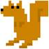 |
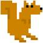 |
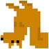 |
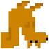 |
|
Original |
Horizontal Flip |
Vertical Flip |
Horizontal and Vertical Flip |
80. while True:
81. runGame()
After the setup in main() is complete, the game begins with runGame() being called.
84. def runGame():
85. # set up variables for the start of a new game
86. invulnerableMode = False # if the player is invulnerable
87. invulnerableStartTime = 0 # time the player became invulnerable
88. gameOverMode = False # if the player has lost
89. gameOverStartTime = 0 # time the player lost
90. winMode = False # if the player has won
The Squirrel Eat Squirrel game has quite a few variables that track the game state. These variables will be explained in more detail later when they are used in the code.
92. # create the surfaces to hold game text
93. gameOverSurf = BASICFONT.render('Game Over', True, WHITE)
94. gameOverRect = gameOverSurf.get_rect()
95. gameOverRect.center = (HALF_WINWIDTH, HALF_WINHEIGHT)
96.
97. winSurf = BASICFONT.render('You have achieved OMEGA SQUIRREL!', True, WHITE)
98. winRect = winSurf.get_rect()
99. winRect.center = (HALF_WINWIDTH, HALF_WINHEIGHT)
100.
101. winSurf2 = BASICFONT.render('(Press "r" to restart.)', True, WHITE)
102. winRect2 = winSurf2.get_rect()
103. winRect2.center = (HALF_WINWIDTH, HALF_WINHEIGHT + 30)
These variables contain Surface objects with the “Game Over”, “You have achieved OMEGA SQUIRREL!”, and “(Press "r" to restart.)” text that appears on the screen after the game ends (with either the player losing or winning).
105. # camerax and cameray are where the middle of the camera view is
106. camerax = 0
107. cameray = 0
The camerax and cameray variables track the game coordinates of the “camera”. Imagine the game world as an infinite 2D space. This could, of course, never fit on any screen. We can only draw a portion of the infinite 2D space on the screen. We call the area of this portion a camera, because it is as though our screen is just the area of the game world in front what a camera would see. Here’s a picture of the game world (an infinite green field) and the area that the camera can view:
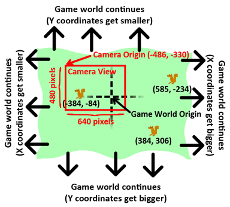
As you can see, the game world XY coordinates keep getting bigger and smaller forever. The game world origin is where the (0, 0) game world coordinates are. You can see that the three squirrels are located (in game world coordinates) at (-384, -84), (384, 306), and (585, -234).
But we can only display 640 x 480 pixel area on the screen (though this can change if we pass different numbers to the pygame.display.set_mode() function), so we need to track where the camera’s origin is located in game world coordinates. In the picture above, the camera is placed at (-486, -330) in game world coordinates.
The picture below shows the same field and squirrels, except everything is given in camera coordinates:
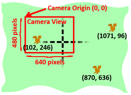
The area that the camera can see (called the camera view) has it’s center (that is, its origin) at the game world coordinates (-486, -330). Since what the camera sees is displayed on the player’s screen, the “camera” coordinates are the same as the “pixel” coordinates. To find out the pixel coordinates of the squirrels (that is, where on the screen they appear), take the game coordinates of the squirrel and subtract the game coordinates of the camera’s origin.
So the squirrel on the left has game world coordinates of (-384, -84) but appears at (102, 246) on the screen in pixel coordinates. (For the X coordinate, -384 - -486 = 102 and for the Y coordinate, -84 - -330 = 246.)
When we do the same calculation to find the pixel coordinates of the other two squirrels, we find that they exist outside of the range of the screen. This is why they don’t appear in the camera’s view.
The “active area” is just a name I came up with to describe the area of the game world that the camera views plus an area around it the size of the camera area:
Calculating if something is in the active area or not is explained in the isOutsideActiveArea() function’s explanation later in this chapter. When we create new enemy squirrel or grass objects, we don’t want them to be created inside the view of the camera, since it’ll appear that they just pop out of nowhere.
But we also don’t want to create them too far away from the camera, because then they may never wander into the camera’s view. Inside the active area but outside the camera is where squirrel and grass objects can safely be created.
Also, when squirrel and grass objects are beyond the border of the active area then they are far away enough to delete so that they don’t take up memory any more. Objects that far away aren’t needed since it is much less likely that they’ll come back into view of the camera.
If you have ever played Super Mario World on the Super Nintendo, there is a good YouTube video explaining how Super Mario World’s camera system works. You can find this video at http://invpy.com/mariocamera.
109. grassObjs = [] # stores all the grass objects in the game
110. squirrelObjs = [] # stores all the non-player squirrel objects
111. # stores the player object:
112. playerObj = {'surface': pygame.transform.scale(L_SQUIR_IMG, (STARTSIZE, STARTSIZE)),
113. 'facing': LEFT,
114. 'size': STARTSIZE,
115. 'x': HALF_WINWIDTH,
116. 'y': HALF_WINHEIGHT,
117. 'bounce':0,
118. 'health': MAXHEALTH}
119.
120. moveLeft = False
121. moveRight = False
122. moveUp = False
123. moveDown = False
The grassObjs variable holds a list of all the grass objects in the game. As new grass objects are created, they are added to this list. As grass objects are deleted, they are removed from this list. The same goes for the squirrelObjs variable and the enemy squirrel objects.
The playerObj variable is not a list, but just the dictionary value itself.
The move variables on lines 120 to 123 track which of arrow keys (or WASD keys) are being held down, just like in a few of the previous game programs.
125. # start off with some random grass images on the screen
126. for i in range(10):
127. grassObjs.append(makeNewGrass(camerax, cameray))
128. grassObjs[i]['x'] = random.randint(0, WINWIDTH)
129. grassObjs[i]['y'] = random.randint(0, WINHEIGHT)
The active area should start off with a few grass objects visible on the screen. The makeNewGrass() function will create and return a grass object that is randomly located somewhere in the active area but outside the camera view. This is what we normally want when we call makeNewGrass(), but since we want to make sure the first few grass objects are on the screen, the X and Y coordinates are overwritten.
131. while True: # main game loop
The game loop, like the game loops in the previous game programs, will do event handling, updating the game state, and drawing everything to the screen.
132. # Check if we should turn off invulnerability
133. if invulnerableMode and time.time() - invulnerableStartTime > INVULNTIME:
134. invulnerableMode = False
When the player gets hit by an enemy squirrel and does not die, we make the player invulnerable for a couple seconds (since the INVULNTIME constant is set to 2). During this time, the player’s squirrel flashes and the won’t take any damage from other squirrels. If the “invulnerability mode” time is over, line 134 will set invulnerableMode to False.
136. # move all the squirrels
137. for sObj in squirrelObjs:
138. # move the squirrel, and adjust for their bounce
139. sObj['x'] += sObj['movex']
140. sObj['y'] += sObj['movey']
The enemy squirrels all move according to the values in their 'movex' and 'movey' keys. If these values are positive, the squirrels move right or down. If these values are negative, they move left or up. The larger the value, the farther they move on each iteration through the game loop (which means they move faster).
The for loop on line 137 will apply this moving code to each of the enemy squirrel objects in the squirrelObjs list. First, line 139 and 140 will adjust their 'x' and 'y' keys’ values.
141. sObj['bounce'] += 1
142. if sObj['bounce'] > sObj['bouncerate']:
143. sObj['bounce'] = 0 # reset bounce amount
The value in sObj['bounce'] is incremented on each iteration of the game loop for each squirrel. When this value is 0, the squirrel is at the very beginning of its bounce. When this value is equal to the value in sObj['bouncerate'] the value is at its end. (This is why a smaller sObj['bouncerate'] value makes for a faster bounce. If sObj['bouncerate'] is 3, then it only takes three iterations through the game loop for the squirrel to do a full bounce. If sObj['bouncerate'] were 10, then it would take ten iterations.)
When sObj['bounce'] gets larger than sObj['bouncerate'], then it needs to be reset to 0. This is what lines 142 and 143 do.
145. # random chance they change direction
146. if random.randint(0, 99) < DIRCHANGEFREQ:
147. sObj['movex'] = getRandomVelocity()
148. sObj['movey'] = getRandomVelocity()
149. if sObj['movex'] > 0: # faces right
150. sObj['surface'] = pygame.transform.scale(R_SQUIR_IMG, (sObj['width'], sObj['height']))
151. else: # faces left
152. sObj['surface'] = pygame.transform.scale(L_SQUIR_IMG, (sObj['width'], sObj['height']))
There is a 2% chance on each iteration through the game loop that the squirrel will randomly change speed and direction. On line 146 the random.randint(0, 99) call randomly selects an integer out of 100 possible integers. If this number is less than DIRCHANGEFREQ (which we set to 2 on line 33) then a new value will be set for sObj['movex'] and sObj['movey'].
Because this means the squirrel might have changed direction, the Surface object in sObj['surface'] should be replaced by a new one that is properly facing left or right and scaled to the squirrel’s size. This is what lines 149 to 152 determine. Note that line 150 gets a Surface object scaled from R_SQUIR_IMG and line 152 gets one scaled from L_SQUIR_IMG.
155. # go through all the objects and see if any need to be deleted.
156. for i in range(len(grassObjs) - 1, -1, -1):
157. if isOutsideActiveArea(camerax, cameray, grassObjs[i]):
158. del grassObjs[i]
159. for i in range(len(squirrelObjs) - 1, -1, -1):
160. if isOutsideActiveArea(camerax, cameray, squirrelObjs[i]):
161. del squirrelObjs[i]
During each iteration of the game loop, the code will check all of the grass and enemy squirrel objects to see if they are outside the “active area”. The isOutsideActiveArea() function takes the current coordinates of the camera (which are stored in camerax and cameray) and the grass/enemy squirrel object, and returns True if the object is not located in the active area.
If this is the case, this object is deleted on line 158 (for grass objects) or line 161 (for squirrel objects). This is how squirrel and grass objects get deleted when the player moves far enough away from them (or when the enemy squirrels move away far enough from the player). This ensures that there is always a number of squirrels and grass objects near the player.
Deleting squirrel and grass objects is done with the del operator. However, notice that the for loop on line 156 and 159 pass arguments to the range() function so that the numbering starts at the index of the last item and then decrements by -1 (unlike incrementing by 1 as it normally does) until it reaches the number -1. We are iterating backwards over the list’s indexes compared to how it is normally done. This is done because we are iterating over the list that we are also deleting items from.
To see why this reverse order is needed, say we had the following list value:
animals = ['cat', 'mouse', 'dog', 'horse']
So we wanted to write code to delete any instances of the string 'dog' from this list. We might think to write out code like this:
for i in range(len(animals)):
if animals[i] == 'dog':
del animals[i]
But if we ran this code, we would get an IndexError error that looks like this:
Traceback (most recent call last):
File "<stdin>", line 2, in <module>
IndexError: list index out of range
To see why this error happens, let’s walk through the code. First, the animals list would be set to ['cat', 'mouse', 'dog', 'horse'] and len(animals) would return 4. This means that the call to range(4) would cause the for loop to iterate with the values 0, 1, 2, and 3.
When the for loop iterates with i set to 2, the if statement’s condition will be True and the del animals[i] statement will delete animals[2]. This means that afterwards the animals list will be ['cat', 'mouse', 'horse']. The indexes of all the items after 'dog' are all shifted down by one because the 'dog' value was removed.
But on the next iteration through the for loop, i is set to 3. But animals[3] is out of bounds because the valid indexes of the animals list is no longer 0 to 3 but 0 to 2. The original call to range() was for a list with 4 items in it. The list changed in length, but the for loop is set up for the original length.
However, if we iterate from the last index of the list to 0, we don’t run into this problem. The following program deletes the 'dog' string from the animals list without causing an IndexError error:
animals = ['cat', 'mouse', 'dog', 'horse']
for i in range(len(animals) - 1, -1, -1):
if animals[i] == 'dog':
del animals[i]
The reason this code doesn’t cause an error is because the for loop iterates over 3, 2, 1, and 0. On the first iteration, the code checks if animals[3] is equal to 'dog'. It isn’t (animals[3] is 'horse') so the code moves on to the next iteration. Then animals[2] is checked if it equals 'dog'. It does, so animals[2] is deleted.
After animals[2] is deleted, the animals list is set to ['cat', 'mouse', 'horse']. On the next iteration, i is set to 1. There is a value at animals[1] (the 'mouse' value), so no error is caused. It doesn’t matter that all the items in the list after 'dog' have shifted down by one, because since we started at the end of the list and are going towards the front, all of those items have already been checked.
Similarly, we can delete grass and squirrel objects from the grassObjs and squirrelObjs lists without error because the for loop on lines 156 and 159 iterate in reverse order.
163. # add more grass & squirrels if we don't have enough.
164. while len(grassObjs) < NUMGRASS:
165. grassObjs.append(makeNewGrass(camerax, cameray))
166. while len(squirrelObjs) < NUMSQUIRRELS:
167. squirrelObjs.append(makeNewSquirrel(camerax, cameray))
Remember that the NUMGRASS constant was set to 80 and the NUMSQUIRRELS constant was set to 30 at the beginning of the program? These variables are set so that we can be sure there are always plenty of grass and squirrel objects in the active area at all times. If the length of the grassObjs or squirrelObjs drops below NUMGRASS or NUMSQUIRRELS respectively, then new grass and squirrel objects are created. The makeNewGrass() and makeNewSquirrel() functions that create these objects are explained later in this chapter.
169. # adjust camerax and cameray if beyond the "camera slack"
170. playerCenterx = playerObj['x'] + int(playerObj['size'] / 2)
171. playerCentery = playerObj['y'] + int(playerObj['size'] / 2)
172. if (camerax + HALF_WINWIDTH) - playerCenterx > CAMERASLACK:
173. camerax = playerCenterx + CAMERASLACK - HALF_WINWIDTH
174. elif playerCenterx – (camerax + HALF_WINWIDTH) > CAMERASLACK:
175. camerax = playerCenterx – CAMERASLACK - HALF_WINWIDTH
176. if (cameray + HALF_WINHEIGHT) - playerCentery > CAMERASLACK:
177. cameray = playerCentery + CAMERASLACK - HALF_WINHEIGHT
178. elif playerCentery – (cameray + HALF_WINHEIGHT) > CAMERASLACK:
179. cameray = playerCentery – CAMERASLACK - HALF_WINHEIGHT
The camera’s position (which is stored as integers in the camerax and cameray variables) needs to be updated when the player moves over. I’ve called the number of pixels the player can move before the camera gets updated the “camera slack”. Line 19 set the CAMERASLACK constant to 90, which our program will take to mean that the player squirrel can move 90 pixels from the center before the camera position gets updated to follow the squirrel.
In order to understand the equations used in the if statements on lines 172, 174, 176, and 178, you should note that (camerax + HALF_WINWIDTH) and (cameray + HALF_WINHEIGHT) are the XY game world coordinates currently at the center of the screen. The playerCenterx and playerCentery is set to the middle of the player’s squirrel’s position, also in game world coordinates.
For line 172, if the center X coordinate minus the player’s center X coordinate is greater than the CAMERASLACK value, that means the player is more pixels to the right of the center of the camera than the camera slack should allow. The camerax value needs to be updated so that the player squirrel is just at the edge of the camera slack. This is why line 173 sets camerax to playerCenterx + CAMERASLACK – HALF_WINWIDTH. Note that the camerax variable is changed, not the playerObj['x'] value. We want to move the camera, not the player.
The other three if statements follow similar logic for the left, up and down sides.
181. # draw the green background
182. DISPLAYSURF.fill(GRASSCOLOR)
Line 182 begins the code that starts drawing the contents of the display Surface object. First, line 182 draws a green color for the background. This will paint over all of the previous contents of the Surface so that we can start drawing the frame from scratch.
184. # draw all the grass objects on the screen
185. for gObj in grassObjs:
186. gRect = pygame.Rect( (gObj['x'] - camerax,
187. gObj['y'] - cameray,
188. gObj['width'],
189. gObj['height']) )
190. DISPLAYSURF.blit(GRASSIMAGES[gObj['grassImage']], gRect)
The for loop on line 185 goes through all the grass objects in the grassObjs list and creates a Rect object from the x, y, width, and height information stored in it. This Rect object is stored in a variable named gRect. On line 190, gRect is used in the blit() method call to draw the grass image on the display Surface. Note that gObj['grassImage'] only contains an integer that is an index to GRASSIMAGES. GRASSIMAGES is a list of Surface objects that contain all the grass images. Surface objects take up much more memory than just a single integer, and all the grass objects with similar gObj['grassImage'] values look identical. So it makes sense to only have each grass image stored once in GRASSIMAGES and simply store integers in the grass objects themselves.
193. # draw the other squirrels
194. for sObj in squirrelObjs:
195. sObj['rect'] = pygame.Rect( (sObj['x'] - camerax,
196. sObj['y'] - cameray - getBounceAmount(sObj['bounce'], sObj['bouncerate'], sObj['bounceheight']),
197. sObj['width'],
198. sObj['height']) )
199. DISPLAYSURF.blit(sObj['surface'], sObj['rect'])
The for loop that draws all the enemy squirrel game objects is similar to the previous for loop, except that the Rect object it creates is saved in the 'rect' key’s value of the squirrel dictionary. The reason the code does this is because we will use this Rect object later to check if the enemy squirrels have collided with the player squirrel.
Note that the top parameter for the Rect constructor is not just sObj['y'] - cameray but sObj['y'] - cameray - getBounceAmount(sObj['bounce'], sObj['bouncerate'], sObj['bounceheight']). The getBounceAmount() function will return the number of pixels that the top value should be raised.
Also, there is no common list of Surface objects of the squirrel images, like there was with grass game objects and GRASSIMAGES. Each enemy squirrel game object has its own Surface object stored in the 'surface' key. This is because the squirrel images can be scaled to different sizes.
202. # draw the player squirrel
203. flashIsOn = round(time.time(), 1) * 10 % 2 == 1
After drawing the grass and enemy squirrels, the code will draw the player’s squirrel. However, there is one case where we would skip drawing the player’s squirrel. When the player collides with a larger enemy squirrel, the player takes damage and flashes for a little bit to indicate that the player is temporarily invulnerable. This flashing effect is done by drawing the player squirrel on some iterations through the game loop but not on others.
The player squirrel will be drawn on game loop iterations for a tenth of a second, and then not drawn on the game loop iterations for a tenth of second. This repeats over and over again as long as the player is invulnerable (which, in the code, means that the invulnerableMode variable is set to True). Our code will make the flashing last for two seconds, since 2 was stored in the INVULNTIME constant variable on line 25.
To determine if the flash is on or not, line 202 grabs the current time from time.time(). Let’s use the example where this function call returns 1323926893.622. This value is passed to round(), which rounds it to one digit past the decimal point (since 1 is passed as round()’s second parameter). This means round() will return the value 1323926893.6.
This value is then multiplied by 10, to become 13239268936. Once we have it as an integer, we can do the “mod two” trick first discussed in the Memory Puzzle chapter to see if it is even or odd. 13239268936 % 2 evaluates to 0, which means that flashIsOn will be set to False, since 0 == 1 is False.
In fact, time.time() will keep returning values that will end up putting False into flashIsOn until 1323926893.700, which is the next tenth second. This is why the flashIsOn variable will constantly have False for one tenth of a second, and then True for the next one tenth of a second (no matter how many iterations happen in that tenth of a second).
204. if not gameOverMode and not (invulnerableMode and flashIsOn):
205. playerObj['rect'] = pygame.Rect( (playerObj['x'] - camerax,
206. playerObj['y'] – cameray - getBounceAmount(playerObj['bounce'], BOUNCERATE, BOUNCEHEIGHT),
207. playerObj['size'],
208. playerObj['size']) )
209. DISPLAYSURF.blit(playerObj['surface'], playerObj['rect'])
There are three things that must be True before we draw the player’s squirrel. The game must currently be going on (which happens while gameOverMode is False) and the player is not invulnerable and not flashing (which happens while invulnerableMode and flashIsOn are False).
The code for drawing the player’s squirrel is almost identical to the code for drawing the enemy squirrels.
212. # draw the health meter
213. drawHealthMeter(playerObj['health'])
The drawHealthMeter() function draws the indicator at the top left corner of the screen that tells the player how many times the player squirrel can be hit before dying. This function will be explained later in this chapter.
215. for event in pygame.event.get(): # event handling loop
216. if event.type == QUIT:
217. terminate()
The first thing that is checked in the event handling loop is if the QUIT event has been generated. If so, then the program should be terminated.
219. elif event.type == KEYDOWN:
220. if event.key in (K_UP, K_w):
221. moveDown = False
222. moveUp = True
223. elif event.key in (K_DOWN, K_s):
224. moveUp = False
225. moveDown = True
If the up or down arrow keys have been pressed (or their WASD equivalents), then the move variable (moveRight, moveDown, etc.) for that direction should be set to True and the move variable for the opposite direction should be set to False.
226. elif event.key in (K_LEFT, K_a):
227. moveRight = False
228. moveLeft = True
229. if playerObj['facing'] == RIGHT: # change player image
230. playerObj['surface'] = pygame.transform.scale(L_SQUIR_IMG, (playerObj['size'], playerObj['size']))
231. playerObj['facing'] = LEFT
232. elif event.key in (K_RIGHT, K_d):
233. moveLeft = False
234. moveRight = True
235. if playerObj['facing'] == LEFT: # change player image
236. playerObj['surface'] = pygame.transform.scale(R_SQUIR_IMG, (playerObj['size'], playerObj['size']))
237. playerObj['facing'] = RIGHT
The moveLeft and moveRight variables should also be set when the left or right arrow keys are pressed. Also, the value in playerObj['facing'] should be updated to either LEFT or RIGHT. If the player squirrel is now facing a new direction, the playerObj['surface'] value should be replaced with a correctly scaled image of the squirrel facing the new direction.
Line 229 is run if the left arrow key was pressed and checks if the player squirrel was facing right. If that was so, then a new scaled Surface object of the player squirrel image is stored in playerObj['surface']. The code in line 232’s elif statement handles the opposite case.
238. elif winMode and event.key == K_r:
239. return
If the player has won the game by growing large enough (in which case, winMode will be set to True) and the R key has been pressed, then runGame()should return. This will end the current game, and a new game will start the next time that runGame() gets called.
241. elif event.type == KEYUP:
242. # stop moving the player's squirrel
243. if event.key in (K_LEFT, K_a):
244. moveLeft = False
245. elif event.key in (K_RIGHT, K_d):
246. moveRight = False
247. elif event.key in (K_UP, K_w):
248. moveUp = False
249. elif event.key in (K_DOWN, K_s):
250. moveDown = False
If the player lets up on any of the arrow or WASD keys, then the code should set the move variable for that direction to False. This will stop the squirrel from moving in that direction any more.
252. elif event.key == K_ESCAPE:
253. terminate()
If the key that was pressed was the Esc key, then terminate the program.
255. if not gameOverMode:
256. # actually move the player
257. if moveLeft:
258. playerObj['x'] -= MOVERATE
259. if moveRight:
260. playerObj['x'] += MOVERATE
261. if moveUp:
262. playerObj['y'] -= MOVERATE
263. if moveDown:
264. playerObj['y'] += MOVERATE
The code inside the if statement on line 255 will move the player’s squirrel around only if the game is not over. (This is why pressing on the arrow keys after the player’s squirrel dies will have no effect.) Depending on which of the move variables is set to True, the playerObj dictionary should have its playerObj['x'] and playerObj['y'] values changed by MOVERATE. (This is why a larger value in MOVERATE makes the squirrel move faster.)
266. if (moveLeft or moveRight or moveUp or moveDown) or playerObj['bounce'] != 0:
267. playerObj['bounce'] += 1
268.
269. if playerObj['bounce'] > BOUNCERATE:
270. playerObj['bounce'] = 0 # reset bounce amount
The value in playerObj['bounce'] keeps track of at what point in bouncing the player is at. This variable stores an integer value from 0 to BOUNCERATE. Just like the bounce value for the enemy squirrels, a playerObj['bounce'] value of 0 means the player squirrel is at the start of a bounce and a value of BOUNCERATE means the player squirrel is at the end of the bounce.
The player squirrel will bounce whenever the player is moving, or if the player has stopped moving but the squirrel hasn’t finished its current bounce. This condition is captured in the if statement on line 266. If any of the move variables is set to True or the current playerObj['bounce'] is not 0 (which means the player is currently in a bounce), then the variable should be incremented on line 267.
Because the playerObj['bounce'] variable should only be in the range of 0 to BOUNCERATE, if incrementing it makes it larger than BOUNCERATE, it should be reset back to 0.
272. # check if the player has collided with any squirrels
273. for i in range(len(squirrelObjs)-1, -1, -1):
274. sqObj = squirrelObjs[i]
The for loop on 273 will go run code on each of the enemy squirrel game objects in squirrelObjs. Notice that the parameters to range() on line 273 start at the last index of squirrelObjs and decrement. This is because the code inside this for loop may end up deleting some of these enemy squirrel game objects (if the player’s squirrel ends up eating them), so it is important to iterate from the end down to the front. The reason why was explained previously in the “When Deleting Items in a List, Iterate Over the List in Reverse” section.
275. if 'rect' in sqObj and playerObj['rect'].colliderect(sqObj['rect']):
276. # a player/squirrel collision has occurred
277.
278. if sqObj['width'] * sqObj['height'] <= playerObj['size']**2:
279. # player is larger and eats the squirrel
280. playerObj['size'] += int( (sqObj['width'] * sqObj['height'])**0.2 ) + 1
281. del squirrelObjs[i]
If the player’s squirrel is equal or larger than the size of the enemy squirrel it has collided with, then the player’s squirrel will eat that squirrel and grow. The number that is added to the 'size' key in the player object (that is, the growth) is calculated based on the enemy squirrel’s size on line 280. Here’s a graph showing the growth from different sized squirrels. Notice that larger squirrels cause more growth:
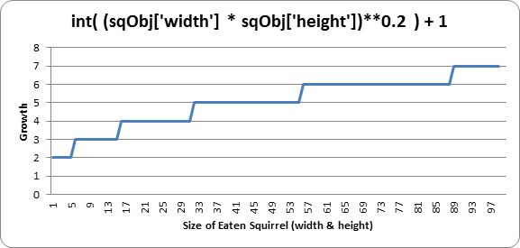
So, according to the chart, eating a squirrel that has a width and height of 45 (that is, an area of 1600 pixels) would cause the player to grow 5 pixels wider and taller.
Line 281 deletes the eaten squirrel object from the squirrelObjs list so that it will no longer appear on the screen or have its position updated.
283. if playerObj['facing'] == LEFT:
284. playerObj['surface'] = pygame.transform.scale(L_SQUIR_IMG, (playerObj['size'], playerObj['size']))
285. if playerObj['facing'] == RIGHT:
286. playerObj['surface'] = pygame.transform.scale(R_SQUIR_IMG, (playerObj['size'], playerObj['size']))
The player’s squirrel image needs to be updated now that the squirrel is larger. This can be done by passing the original squirrel image in L_SQUIR_IMG or R_SQUIR_IMG to the pygame.transform.scale() function, which will return an enlarged version of the image. Depending on whether playerObj['facing'] is equal to LEFT or RIGHT determines which original squirrel image we pass to the function.
288. if playerObj['size'] > WINSIZE:
289. winMode = True # turn on "win mode"
The way the player wins the game is by getting the squirrel to have a size larger than the integer stored in the WINSIZE constant variable. If this is true, then the winMode variable is set to True. Code in the other parts of this function will handle displaying the congratulations text and checking for the player to press the R key to restart the game.
291. elif not invulnerableMode:
292. # player is smaller and takes damage
293. invulnerableMode = True
294. invulnerableStartTime = time.time()
295. playerObj['health'] -= 1
296. if playerObj['health'] == 0:
297. gameOverMode = True # turn on "game over mode"
298. gameOverStartTime = time.time()
If the player’s area was not equal to or larger than the area of the enemy squirrel, and invulnerableMode was not set to True, then the player will take damage from colliding with this larger squirrel.
To prevent the player from being damaged several times by the same squirrel immediately, we will briefly make the player invulnerable to further squirrel attacks by setting invulnerableMode to True on line 293. Line 294 will set invulnerableStartTime to the current time (which is returned by time.time()) so that lines 133 and 134 can know when to set invulnerableMode to False.
Line 295 decrements the player’s health by 1. Because there is a chance that the player’s health is now at 0, line 296 checks for this and, if so, sets gameOverMode to True and gameOverStartTime to the current time.
299. else:
300. # game is over, show "game over" text
301. DISPLAYSURF.blit(gameOverSurf, gameOverRect)
302. if time.time() - gameOverStartTime > GAMEOVERTIME:
303. return # end the current game
When the player has died, the “Game Over” text (which is on the Surface object in the gameOverSurf variable) will be shown on the screen for the number of seconds that is in the GAMEOVERTIME constant. Once this amount of time has elapsed, then the runGame() function will return.
This lets the enemy squirrels continue to be animated and moving around for a few seconds after the player dies and before the next game starts. The “game over screen” in Squirrel Eat Squirrel does not wait until the player presses a key before a new game starts.
305. # check if the player has won.
306. if winMode:
307. DISPLAYSURF.blit(winSurf, winRect)
308. DISPLAYSURF.blit(winSurf2, winRect2)
309.
310. pygame.display.update()
311. FPSCLOCK.tick(FPS)
The winMode variable is set to True on line 289 if the player has reached a certain size (which is dictated by the WINSIZE constant). All that happens when the player has won is that the “You have achieved OMEGA SQUIRREL!” text (which is on the Surface object stored in the winSurf variable) and the “(Press “r” to restart.)” text (which is on the Surface object stored in the winSurf2 variable) appears on the screen. The game continues until the user presses the R key, at which point the program execution will return from runGame(). The event handling code for the R key is done on lines 238 and 239.
316. def drawHealthMeter(currentHealth):
317. for i in range(currentHealth): # draw red health bars
318. pygame.draw.rect(DISPLAYSURF, RED, (15, 5 + (10 * MAXHEALTH) - i * 10, 20, 10))
319. for i in range(MAXHEALTH): # draw the white outlines
320. pygame.draw.rect(DISPLAYSURF, WHITE, (15, 5 + (10 * MAXHEALTH) - i * 10, 20, 10), 1)
To draw the health meter, first the for loop on line 317 draws the filled-in red rectangle for the amount of health the player has. Then the for loop on line 319 draws an unfilled white rectangle for all of the possible health the player could have (which is the integer value stored in the MAXHEALTH constant). Note that the pygame.display.update() function is not called in drawHealthMeter().
323. def terminate():
324. pygame.quit()
325. sys.exit()
The terminate() function works the same as in the previous game programs.
328. def getBounceAmount(currentBounce, bounceRate, bounceHeight):
329. # Returns the number of pixels to offset based on the bounce.
330. # Larger bounceRate means a slower bounce.
331. # Larger bounceHeight means a higher bounce.
332. # currentBounce will always be less than bounceRate
333. return int(math.sin( (math.pi / float(bounceRate)) * currentBounce ) * bounceHeight)
334.
There is a mathematical function (which is similar to functions in programming in that they both “return” or “evaluate” to a number based on their parameters) called sine (pronounced like “sign” and often abbreviated as “sin”). You may have learned about it in math class, but if you haven’t it will be explained here. Python has this mathematic function as a Python function in the math module. You can pass an int or float value to math.sin(), and it will return a float value that is called the “sine value”
In the interactive shell, let’s see what math.sin() returns for some values:
>>> import math
>>> math.sin(1)
0.8414709848078965
>>> math.sin(2)
0.90929742682568171
>>> math.sin(3)
0.14112000805986721
>>> math.sin(4)
-0.7568024953079282
>>> math.sin(5)
-0.95892427466313845
It seems really hard to predict what value math.sin() is going to return based on what value we pass it (which might make you wonder what math.sin() is useful for). But if we graph the sine values of the integers 1 through 10 on a graph, we would get this:

You can kind of see a wavy pattern in the values returned by math.sin(). If you figure out the sine values for more numbers besides integers (for example, 1.5 and 2.5 and so on) and then connect the dots with lines, you can see this wavy pattern more easily:
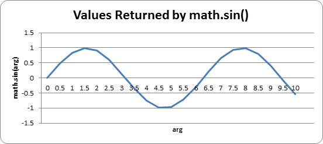
In fact, if you kept adding more and more data points to this graph, you would see that the sine wave looks like this:
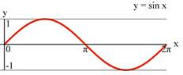
Notice that math.sin(0) returns 0, then gradually increases until math.sin(3.14 / 2) returns 1, then it begins to decrease until math.sin(3.14) returns 0. The number 3.14 is a special number in mathematics called pi (pronounced the same as delicious “pie”). This value is also stored in the constant variable pi in the math module (which is why line 333 uses the variable, math.pi), which is technically the float value 3.1415926535897931. Since we want a wavy-looking bounce for our squirrel, we’ll only pay attention to the return values of math.sin() for the arguments 0 to 3.14:
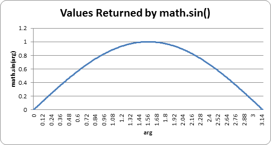
Let’s take a look at the return value of getBounceAmount() and figure out what it does exactly.
333. return int(math.sin( (math.pi / float(bounceRate)) * currentBounce ) * bounceHeight)
Remember that on line 21 we set the BOUNCERATE constant to 6. This means that our code will only increment playerObj['bounce'] from 0 to 6 and that we want to split up the range of floating-point values from 0 to 3.14 into 6 parts, which we can do with simple division: 3.14 / 6 = 0.5235. Each of the 6 equal parts of the 3.14 length on the graph for the “sine wave bounce” is 0.5235.
You can see that when playerObj['bounce'] is at 3 (halfway between 0 and 6), the value passed to the math.sin() call is math.pi / 6 * 3, which is 1.5707 (halfway between 0 and 3.1415). Then math.sin(1.5707) will return 1.0, which is the highest part of the sine wave (and the highest part of the sine wave happens half way through the wave).
As playerObj['bounce'] gets its value incremented, the getBounceAmount() function will return values that have the same bounce shape that the sine wave has from 0 to 3.14. If you want to make the bounce higher, than increase the BOUNCEHEIGHT constant. If you want to make the bounce slower, than increase the BOUNCERATE constant.
The sine function is a concept from trigonometry mathematics. If you’d like to learn more about the sine wave, the Wikipedia page has detailed information: http://en.wikipedia.org/wiki/Sine
The reason we call float() to convert bounceRate to a floating point number is simply so that this program will work in Python version 2. In Python version 3, the division operator will evaluate to a floating point value even if both of the operands are integers, like this:
>>> # Python version 3
...
>>> 10 / 5
2.0
>>> 10 / 4
2.5
>>>
However, in Python version 2, the / division operator will only evaluate to a floating point value if one of the operands is also a floating point value. If both operands are integers, then Python 2’s division operator will evaluate to an integer value (rounding down if needed), like this:
>>> # Python version 2
...
>>> 10 / 5
2
>>> 10 / 4
2
>>> 10 / 4.0
2.5
>>> 10.0 / 4
2.5
>>> 10.0 / 4.0
2.5
But if we always convert one of the values to a floating point value with the float() function, then the division operator will evaluate to a float value no matter which version of Python runs this source code. Making these changes so that our code works with older versions of software is called backwards compatibility. It is important to maintain backwards compatibility, because not everyone will always be running the latest version of software and you want to ensure that the code you write works with as many computers as possible.
You can’t always make your Python 3 code backwards compatible with Python 2, but if it’s possible then you should do it. Otherwise, when people with Python 2 try to run your games will get error messages and think that your program is buggy.
A list of some differences between Python 2 and Python 3 can be found at http://inventwithpython.com/appendixa.html.
335. def getRandomVelocity():
336. speed = random.randint(SQUIRRELMINSPEED, SQUIRRELMAXSPEED)
337. if random.randint(0, 1) == 0:
338. return speed
339. else:
340. return -speed
The getRandomVelocity() function is used to randomly determine how fast an enemy squirrel will move. The range of this velocity is set in the SQUIRRELMINSPEED and SQUIRRELMAXSPEED constants, but on top of that, the speed is either negative (indicating the squirrel goes to the left or up) or positive (indicating the squirrel goes to the right or down). There is a fifty-fifty chance for the random speed to be positive or negative.
343. def getRandomOffCameraPos(camerax, cameray, objWidth, objHeight):
344. # create a Rect of the camera view
345. cameraRect = pygame.Rect(camerax, cameray, WINWIDTH, WINHEIGHT)
346. while True:
347. x = random.randint(camerax - WINWIDTH, camerax + (2 * WINWIDTH))
348. y = random.randint(cameray - WINHEIGHT, cameray + (2 * WINHEIGHT))
349. # create a Rect object with the random coordinates and use colliderect()
350. # to make sure the right edge isn't in the camera view.
351. objRect = pygame.Rect(x, y, objWidth, objHeight)
352. if not objRect.colliderect(cameraRect):
353. return x, y
When a new squirrel or grass object is created in the game world, we want it to be within the active area (so that it is near the player’s squirrel) but not within the view of the camera (so that it doesn’t just suddenly pop into existence on the screen). To do this, we create a Rect object that represents the area of the camera (using camerax, cameray, WINWIDTH, and WINHEIGHT constants).
Next, we randomly generate numbers for the XY coordinates that would be within the active area. The active area’s left and top edge are WINWIDTH and WINHEIGHT pixels to the left and up of camerax and cameray. So the active area’s left and top edge are at camerax - WINWIDTH and cameray - WINHEIGHT. The active area’s width and height are also three times the size of the WINWIDTH and WINHEIGHT, as you can see in this image (where WINWIDTH is set to 640 pixels and WINHEIGHT set to 480 pixels):
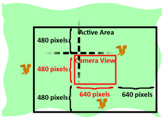
This means the right and bottom edges will be at camerax + (2 * WINWIDTH) and cameray + (2 * WINHEIGHT). Line 352 will check if the random XY coordinates would collide with the camera view’s Rect object. If not, then those coordinates are returned. If so, then the while loop on line 346 will keep generating new coordinates until it finds acceptable ones.
356. def makeNewSquirrel(camerax, cameray):
357. sq = {}
358. generalSize = random.randint(5, 25)
359. multiplier = random.randint(1, 3)
360. sq['width'] = (generalSize + random.randint(0, 10)) * multiplier
361. sq['height'] = (generalSize + random.randint(0, 10)) * multiplier
362. sq['x'], sq['y'] = getRandomOffCameraPos(camerax, cameray, sq['width'], sq['height'])
363. sq['movex'] = getRandomVelocity()
364. sq['movey'] = getRandomVelocity()
Creating enemy squirrel game objects is similar to making the grass game objects. The data for each enemy squirrel is also stored in a dictionary. The width and height are set to random sizes on line 360 and 361. The generalSize variable is used so that the width and height of each squirrel aren’t too different from each other. Otherwise, using completely random numbers for width and height could give us very tall and skinny squirrels or very short and wide squirrels. The width and height of the squirrel are this general size with a random number from 0 to 10 added to it (for slight variation), and then multiplied by the multiplier variable.
The original XY coordinate position of the squirrel will be a random location that the camera cannot see, to prevent the squirrels from just “popping” into existence on the screen.
The speed and direction are also randomly selected by the getRandomVelocity() function.
365. if sq['movex'] < 0: # squirrel is facing left
366. sq['surface'] = pygame.transform.scale(L_SQUIR_IMG, (sq['width'], sq['height']))
367. else: # squirrel is facing right
368. sq['surface'] = pygame.transform.scale(R_SQUIR_IMG, (sq['width'], sq['height']))
369. sq['bounce'] = 0
370. sq['bouncerate'] = random.randint(10, 18)
371. sq['bounceheight'] = random.randint(10, 50)
372. return sq
The L_SQUIR_IMG and R_SQUIR_IMG constants contain Surface objects with left-facing and right-facing squirrel images on them. New Surface objects will be made using the pygame.transform.scale() function to match the squirrel’s width and height (stored in sq['width'] and sq['height'] respectively).
After that, the three bounce-related values are randomly generated (except for sq['bounce'] which is 0 because the squirrel always starts at the beginning of the bounce) and the dictionary is returned on line 372.
375. def makeNewGrass(camerax, cameray):
376. gr = {}
377. gr['grassImage'] = random.randint(0, len(GRASSIMAGES) - 1)
378. gr['width'] = GRASSIMAGES[0].get_width()
379. gr['height'] = GRASSIMAGES[0].get_height()
380. gr['x'], gr['y'] = getRandomOffCameraPos(camerax, cameray, gr['width'], gr['height'])
381. gr['rect'] = pygame.Rect( (gr['x'], gr['y'], gr['width'], gr['height']) )
382. return gr
The grass game objects are dictionaries with the usual 'x', 'y', 'width', 'height', and 'rect' keys but also a 'grassImage' key which is a number from 0 to one less than the length of the GRASSIMAGES list. This number will determine what image the grass game object has. For example, if the value of the grass object’s 'grassImage' key is 3, then it will use the Surface object stored at GRASSIMAGES[3] for its image.
385. def isOutsideActiveArea(camerax, cameray, obj):
386. # Return False if camerax and cameray are more than
387. # a half-window length beyond the edge of the window.
388. boundsLeftEdge = camerax - WINWIDTH
389. boundsTopEdge = cameray - WINHEIGHT
390. boundsRect = pygame.Rect(boundsLeftEdge, boundsTopEdge, WINWIDTH * 3, WINHEIGHT * 3)
391. objRect = pygame.Rect(obj['x'], obj['y'], obj['width'], obj['height'])
392. return not boundsRect.colliderect(objRect)
The isOutsideActiveArea() will return True if the object you pass it is outside of the “active area” that is dictated by the camerax and cameray parameters. Remember that the active area is an area around the camera view the size of the camera view (which has a width and height set by WINWIDTH and WINHEIGHT), like this:
We can create a Rect object that represents the active area by passing camerax - WINWIDTH for the left edge value and cameray - WINHEIGHT for the top edge value, and then WINWIDTH * 3 and WINHEIGHT * 3 for the width and height. Once we have the active area represented as a Rect object, we can use the colliderect() method to determine if the object in the obj parameter is collides with (that is, is inside of) the active area Rect object.
Since the player squirrel, enemy squirrel and grass objects all have 'x', 'y', 'width' and 'height' keys, the isOutsideActiveArea() code can work with any type of those game objects.
395. if __name__ == '__main__':
396. main()
Finally, after all the functions have been defined, the program will run the main() function and start the game.
Squirrel Eat Squirrel was our first game to have multiple enemies moving around the board at once. The key to having several enemies was using a dictionary value with identical keys for each enemy squirrel, so that the same code could be run on each of them during an iteration through the game loop.
The concept of the camera was also introduced. Cameras weren’t needed for our previous games because the entire game world fit onto one screen. However, when you make your own games that involve a player moving around a large game world, you will need code to handle converting between the game world’s coordinate system and the screen’s pixel coordinate system.
Finally, the mathematical sine function was introduced to give realistic squirrel hops (no matter how tall or long each hop was). You don’t need to know a lot of math to do programming. In most cases, just knowing addition, multiplication, and negative numbers is fine. However, if you study mathematics, you’ll often find several uses for math to make your games cooler.
For additional programming practice, you can download buggy versions of Squirrel Eat Squirrel from http://invpy.com/buggy/squirrel and try to figure out how to fix the bugs.
{kind=link}
{kind=link}
{kind=link}
{kind=link}
{kind=link}
{kind=link}